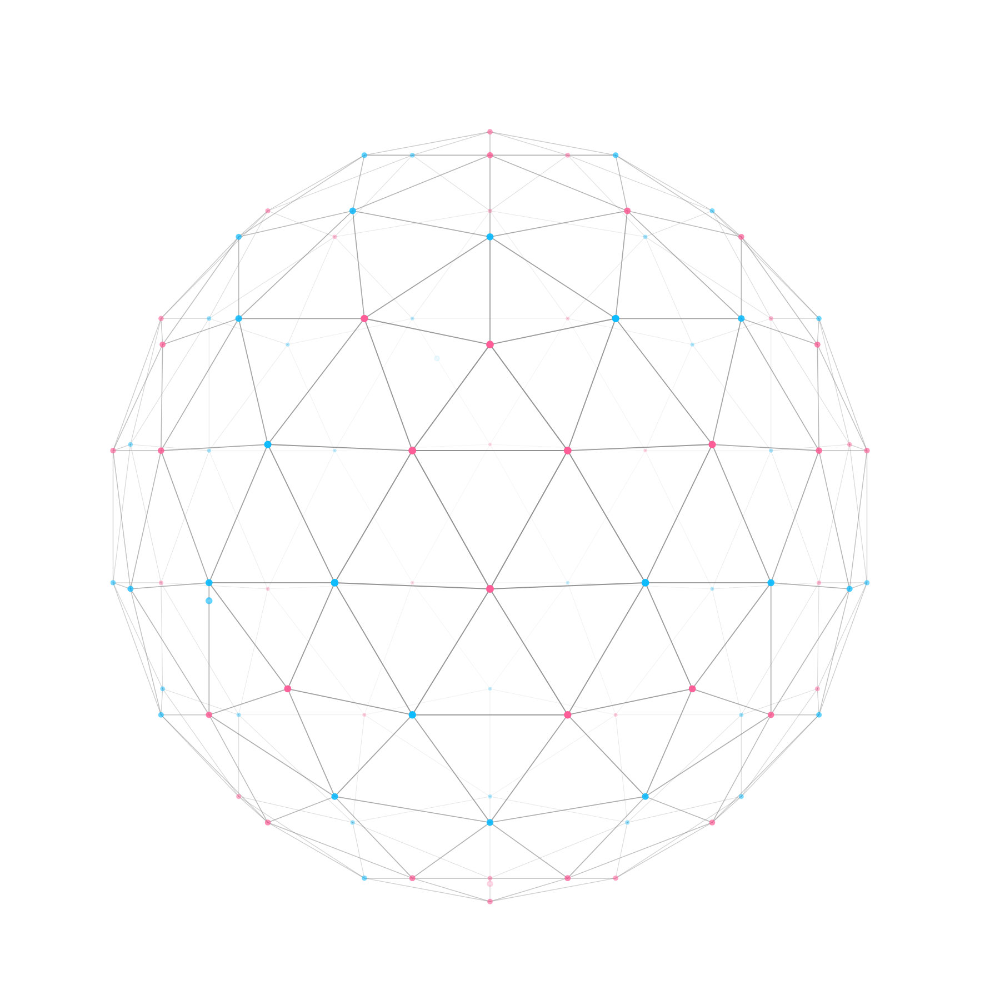

ビジョン
ビジョン
提供できること
提供できること
使用イメージ
使用イメージ
導入事例
導入事例
お問い合わせ
お問い合わせ
お問い合わせ
お問い合わせ
お問い合わせ
お問い合わせ
お問い合わせ
お問い合わせ
Our Vision
デ
ー
タ
を
つ
な
ぐ
こ
と
が
、
強
み
に
な
る
時
代
へ
。

コネクタ
外部サービスをつなぐ
認証ウィザード
認証設定を支える
SDK
開発環境に組み込む
ワークフロー
連携処理を組み立てる
実行エンジン
処理を実行する
Point
01
賢いAIの土台をつくる
AIは、つながったデータの分だけ賢くなる。連携が、AIの燃料になる。
Point
02
業務実行の手足となる
賢いAIは現実の業務を実行できる。数百以上のアクションツールをAIに。